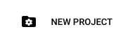
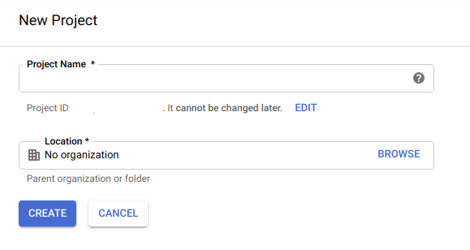
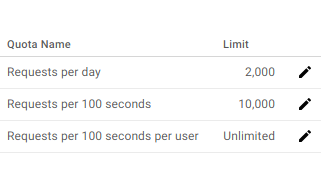
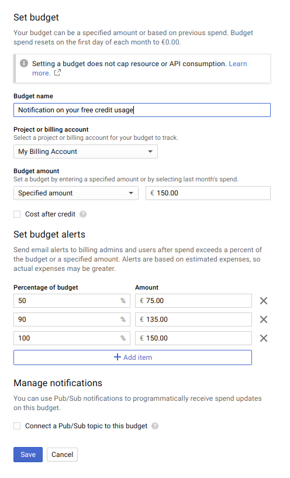
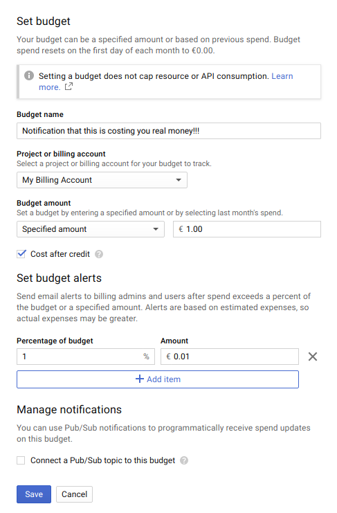
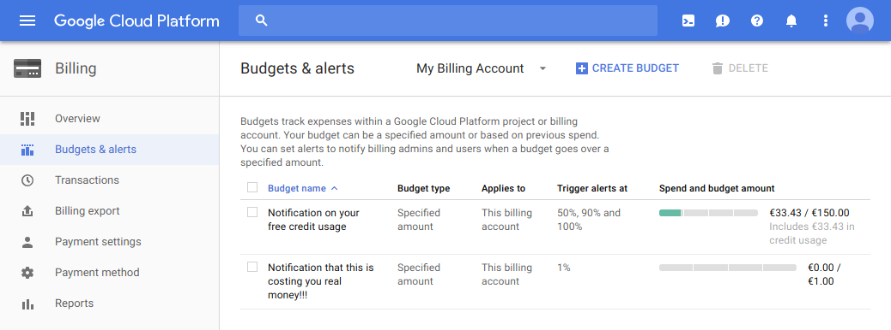
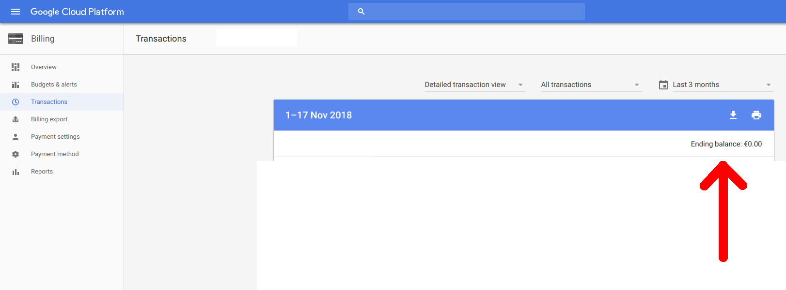
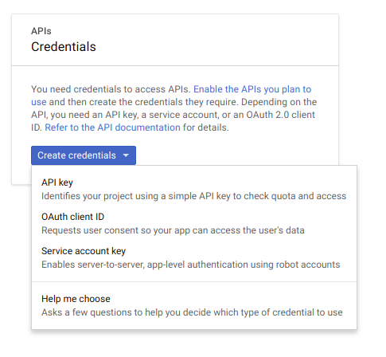
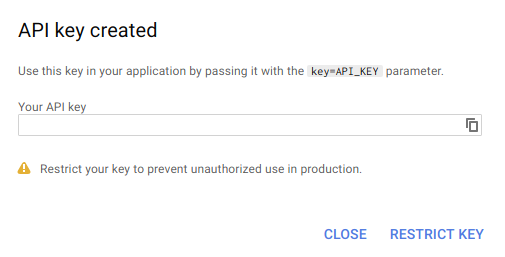

Home
Help Center
Google Places API key access tutorial
!!! WARNING !!!
Please note that the process involves giving your credit card information to Google so it means that
they can charge your credit card if your usage of their APIs is too important.
Accidental/excessive usage could cost you thousands of dollars so it is extremely important to setup
limits before using the API.
Do not skip any step in the instructions of this tutorial.
If you're stuck at one step, do not continue!
This tutorial is written with ordered numbered steps to ensure the limits are properly set before the API
is usable at all.
One of the steps is to verify you know how to view the billing of your account. After you have setup the
API you'll have to watch the billing to make sure you don't have any expenses. You've been warned!
From a user's perspective, I understand that it's not a good experience to have to spend time to get a
basic feature to work, but I'm just one guy, I'm not a big corporation with big money, I have absolutely no
other choice than to impose this onto my users since I want to keep the feature free... if there was a
better way to solve this, I would use it, but after the discussions I had with Google's developer support,
it ended up being the only way for me to keep the feature functional without paying thousands of dollars
from my own pocket. I'm very sorry about that but it's the best solution I could come up with! If you have
any suggestions to do this better, feel free to let me know, I'd love to know about it.
These instructions are aimed at non-developers who are not familiar with the Google Cloud Console and
therefore have a blank Google Cloud Console account. More information on the billing model can be found
here:
Google
Places API billing information
- Login to your Google account in your browser
- Open the Google Cloud Console page here:
Google Cloud Console
-
You will need to create a project: click at the top left on "Select a project"
-
In the dialog, click "NEW PROJECT"

-
In the next page, click the blue "CREATE" button at the bottom

-
Once your project is created, you will need to select it: click at the top left on
"Select a project" again
- Click on your project to select it
-
Open the Google Cloud Console billing page here:
Google Cloud Console Billing
- Click the "Add billing account" button
- Go through the billing registration to obtain a valid billing account. This will involve giving your credit card
information to Google.
- Open the Google Cloud Console billing projects page here:
Google Cloud Console
Billing Projects
- Go to the "My projects" tab
- Click the 3 dots icon on the right of your project and select "Change billing account"
- Click the "SET ACCOUNT" button. At this point, billing is enabled for your project so you can edit the limits
for the APIs you're using.
- Open the Google Cloud Console Places API Page
Google Cloud Console Places API Page
- Click "ENABLE" to enable the Google Places API
- Open the Google Cloud Console Places API Quotas Page
Google Cloud Console Places API Quotas Page
-
Scroll at the bottom, and under "Requests per day", change the maximum to 2000. From my
testing, it appears 2000 requests would allow you to make about 100 searches per day, which
should be enough for most users. The cost for 100 searches would be around 3$, so assuming you
make 100 searches per day, the cost at the end of the month would be around 90$. Since Google
provides a free credit of 200$, it should cover the 90$ and cost you nothing. Please note
this is an estimate: there is absolutely no way to set a limit to the cost, so you'll have
to watch your usage during the month to make sure you don't go over.

-
Create budgets for your accounts from
Google Cloud Console Billing
: you should go to the "budgets" tab and click "create budget" to start creating a budget.
Note that budgets are only about sending you email notifications, not about
limiting your costs at all. It is important to setup budgets so that you are notified by
email when your expenses approach the limit of the free credit and will risk to cost you actual
money.
You should set 2 budgets: one for notifying you as you use the free credit, and one for
notifying you that you're starting to get charged with actual real money (those instructions
are written to help you avoid that).
Here is how to set the budget for notifying you about your free credit usage:

Here is how to set the budget for notifying you when you're starting to spend real money:

Here is how it should look like in the end:

You can see I set the budget 150€ because my account's currency is in euros, so I'm leaving a
bit of buffer to be safe.
-
Make sure you understand how to get to the billing summary page to view your current balance:
Google Cloud Console Billing
Your balance (indicated by a red arrow on the screenshot below) should always be 0. If you see
it's not 0, it means Google will charge you this amount at the end of the month, so you should
stop using the API immediately to avoid further costs. You will need to check this page every
day at the beginning to get a sense of how much you're spending, and making sure you're not
going over the free quota credit.

-
At this point, if you've followed all the previous steps, you can safely create an API
key for your project. For that, open the Google Cloud Credentials page:
Google Cloud Console
Billing
-
Click on the blue "Create Credentials" button and select "API key"

-
Finally copy your API key with the copy button and send it to your phone (by email for example).
